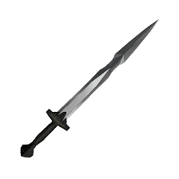
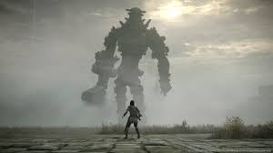
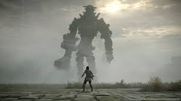

O que é?
Shadow of the Colossus, lançado no Japão como Wander and the Colossus (ワンダと巨像, Wanda to Kyozō),[1] é um jogo eletrônico de ação-aventura desenvolvido pela SCE Japan Studio e publicado pela Sony Computer Entertainment para o PlayStation 2. O jogo foi lançado na América do Norte e no Japão em outubro de 2005 e em territórios PAL em fevereiro de 2006.[2] Ele foi dirigido por Fumito Ueda e desenvolvido pelo International Production Studio 1, também conhecida como Team Ico; o mesmo time de desenvolvimento de Ico.[3][4]
O enredo do jogo se concentra em um jovem chamado Wander, que deve viajar por uma terra proibida com o objetivo de derrotar dezesseis criaturas conhecidas simplesmente como "Colossi",[5] para restaurar a vida de uma garota chamada Mono. O jogo é incomum dentro do gênero de ação-aventura já que não existem cidades e calabouços para serem explorados. Não existe também nenhum personagem com quem interagir e nenhum inimigo além dos Colossos para derrotar.[6][7] Shadow of the Colossus foi descrito como um jogo de quebra-cabeças, já que a fraqueza de cada Colossus deve ser identificada e explorada para que ele seja derrotado.[8][9]
Algumas imagens do jogo
-
Atmosfera única:
-
Boss fight's incríveis:
-
TEM CAVALINHO:
.jpg) 

.jpg)